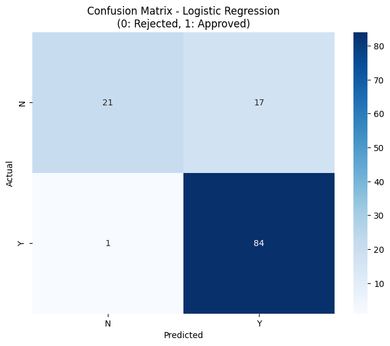

AGENDA
- Background & Problem
- CRISP-DM Methodology
- Data & Exploratory Analysis
- Model Development
- Comparative Results
- Deployment & Future Work
Background
Loans are a major source of bank revenue and a key driver of economic growth.
Manual loan assessment is slow, costly, and subjective.
Lending exposes the bank to credit risk. They need to evaluate one's credit history, income level and debt-to-income ratio. This helps in guaranteeing that only those that can pay back are issued with loans.
In this presentation we will explore how machine learning can automate and standardize loan approvals.
Problem Statement
- High volume of loan applications processed manually.
- Risk of inconsistent decisions and human bias.
- Need for faster, scalable and objective credit risk assessment resulting in increased operational efficiency and improved client experience.
Goal: Build and compare ML models that predict loan approval (Y/N) using historical applicant data.
Core Algorithms
Logistic Regression
- Generalized linear model for binary outcomes.
- Uses a sigmoid function to model P(Loan Approved = 1).
- Highly interpretable; good baseline for structured data.
Decision Tree Classifier
- Tree structure with splits based on feature thresholds.
- Easy to visualize and explain to non-technical users.
- Prone to overfitting without pruning / constraints.
Gradient Boosting Machine (GBM)
- Ensemble of weak learners (shallow trees).
- Each new tree fits the residual errors of the previous model.
- Often very accurate, but sensitive to hyperparameters and small datasets.
Methodology – CRISP-DM
CRISP-DM Phases
- Business Understanding – We understood that the problem in the financial industry is that loan approvals take too long because of how manual the process is. We sought to improve loan approval efficiency & consistency.
- Data Understanding – We used a Kaggle Loan Approval dataset (614 rows, 13 columns). We performed exploratory data analysis on the data so that we could understand how our data is like.
- Data Preparation – This is preparinhg the data before model fitting. We performed cleaning, imputation, encoding, scaling.
- Modeling – Fitting the appropriate models that we used: Logistic Regression, Decision Tree, Gradient Boosting.
- Evaluation – How well did our model do ? We measured the Accuracy, Precision, Recall, F1, ROC–AUC.
- Deployment – Testing our model with different types of loan applications using Streamlit app for real-time predictions.
Data Description
Dataset Overview
- Source: Kaggle – Loan Approval Prediction dataset.
- 614 records after cleaning.
- Features: demographic, financial, and credit history attributes.
- Target:
Loan_Status(Y = approved, N = rejected).
Preprocessing Steps
- Dropped non-informative ID column.
- Regression Iterative imputation to calculate for the missing values (both numeric & categorical).
- LabelEncoding for categorical features; target encoded as 0/1.
- StandardScaler applied to numeric features for LR.
Exploratory Data Analysis
Numeric Feature Distributions
ApplicantIncome, CoapplicantIncome, LoanAmount, Loan_Amount_Term, Credit_History
All show strong right skew or imbalance.
We visualized these using histograms and KDE curves:

Categorical Variables
Most applicants are male, married, graduates, and not self-employed.
Loan approvals (Y) outnumber rejections (N), creating class imbalance.

Approval Rates by Category
We compared approval vs rejection counts for each category.
- Married, graduates, and applicants with 0 dependents show higher approval rates.
- Semiurban properties have slightly higher approvals than urban and rural.

Correlation Heatmap
- Strongest predictor of approval: Credit_History (≈0.57 with Loan_Status).
- ApplicantIncome and LoanAmount are moderately correlated with each other, but weakly with the target.
- Most other correlations are low, suggesting non-linear effects.

Model Development
Training Setup
- Train–test split: 80% training, 20% testing (stratified by Loan_Status).
- Logistic Regression trained on scaled features.
- Decision Tree & Gradient Boosting trained on original feature scales.
Hyperparameter Tuning
- GridSearchCV with 5-fold cross-validation.
- Search space focused on LR penalty (L1/L2), C, solver, and max_iter.
- Best model: L1-regularized Logistic Regression.
Feature Importance (Logistic Regression)
- L1 regularization pruned many coefficients to zero.
- Credit_History → largest positive weight.
- Married → moderate positive contribution.
- Education → small effect.
Confusion Matrix – Logistic Regression
The confusion matrix helps us evaluate how well the Logistic Regression model classifies approved vs rejected loan applications.
- True Positives (TP): correctly predicted approved loans.
- True Negatives (TN): correctly predicted rejected loans.
- False Positives (FP): loans incorrectly approved (riskier misclassification).
- False Negatives (FN): eligible applicants incorrectly rejected.
For a banking environment, minimizing False Negatives is important to avoid turning away good customers.
Comparative Results
Model Performance (Test Set)
- Logistic Regression
- Accuracy ≈ 85%
- Recall (Approved class) ≈ 99%
- F1-score ≈ 0.86
- Decision Tree – lower F1; signs of overfitting.
- Gradient Boosting – reasonable performance but did not surpass tuned LR on this dataset.

Business Interpretation
- High recall means eligible customers are rarely rejected.
- Moderate precision implies some risky approvals → needs risk controls.
- Interpretability of LR makes it suitable for regulated banking environments.
Deployment
LoanGuard Pro – Streamlit App
- Final LR model and scaler exported using
joblib. - Wrapped in an interactive Streamlit web application.
- Inputs: gender, marital status, income, loan amount, term, property area, credit history.
- Outputs: approval prediction + probability.
Conclusion
Key Takeaways
- Logistic Regression provided the best balance of accuracy, recall, and interpretability.
- Credit history is the dominant driver of loan approval.
- The system can support faster, more consistent decision-making in banks.
Future Work
- Train on larger, more diverse datasets.
- Add advanced models (XGBoost, Random Forests, deep learning).
- Integrate SHAP/LIME for detailed explainability.
- Monitor fairness and bias across demographic groups.
- Deploy as a full microservice in a production environment.
Thank You
Questions?